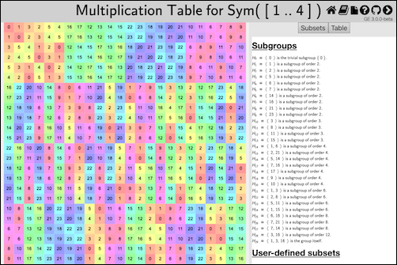
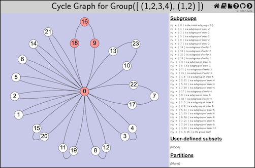
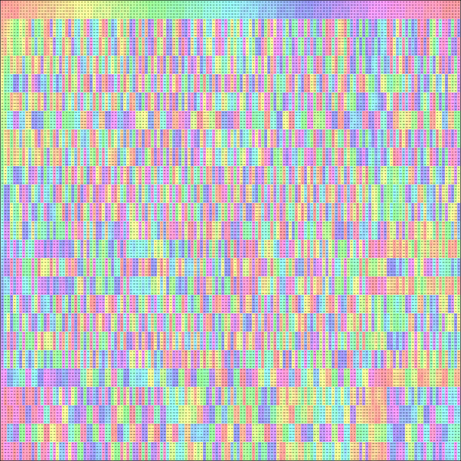

To open a Group Explorer web page rendering a multiplication table of a given group, follow the example below. For additional details, see the documentation for the function ExploreMultiplicationTable (3.1-3).
LoadPackage( "groupexplorer" ); # only needed once, of course G := SymmetricGroup( 4 ); # or any group of reasonable size ExploreMultiplicationTable( G ); # result appears in web browser
The code above opens a page like this in the user's default web browser:

(If the code were invoked in a Jupyter notebook, then that page would instead be embedded in the corresponding output cell of the notebook.)
The heading in the image above contains GAP's name for the group, because we did not provide a name when invoking the ExploreMultiplicationTable (3.1-3) command. Also, group elements have a default naming scheme of natural numbers starting at zero. To see how to change these defaults, refer to the examples in Section 2.9 and the documentation of ExploreGroup (3.1-1).
In Group Explorer, the user can interact with multiplication tables in several ways, including these.
Compute various subgroups, subsets, and partitions
Color elements by subgroup, subset, and/or a partition
Organize the table by a subgroup, or freely reorder rows and columns
Divide the table along coset boundaries to inspect normality of the subgroup
For full details on how to use the Group Explorer interface for these features, see the relevant page in the Group Explorer manual.
In addition to the features listed in the manual, there is an additional feature available when a group has been loaded from an external source, such as GAP. A search icon will appear in the top-right corner of the visualization window, and clicking it will search for the group in Group Explorer's library. If it is found, then Group Explorer will open its Group Info Page for that group, which shows all the visualization options and group-related facts Group Explorer knows about the group, as documented here. If the group is not found (which happens only if it is too large to be included in Group Explorer's library) then a message indicating so will appear, and no Group Info Page will open.
To open a Group Explorer web page rendering a Cayley diagram (or a Cayley graph) of a given group, follow the example below. For additional details, see the documentation for the function ExploreCayleyDiagram (3.1-4).
LoadPackage( "groupexplorer" ); # only needed once, of course G := SymmetricGroup( 3 ); # or any group of reasonable size ExploreCayleyDiagram( G ); # result appears in web browser
The code above opens a page like this in the user's default web browser:
(If the code were invoked in a Jupyter notebook, then that page would instead be embedded in the corresponding output cell of the notebook.)
The heading in the image above contains GAP's name for the group, because we did not provide a name when invoking the ExploreCayleyDiagram (3.1-4) command. Also, group elements have a default naming scheme of natural numbers starting at zero. To see how to change these defaults, refer to the examples in Section 2.9 and the documentation of ExploreGroup (3.1-1).
In Group Explorer, the user can interact with Cayley diagrams in several ways, including these.
Clicking and dragging to rotate the diagram in space (particularly useful if the diagram is three-dimensional, unlike the example above)
Compute various subgroups, subsets, and partitions
Color elements by subgroup, subset, and/or a partition
Organize the diagram by a subgroup, request the digram change its layout, or freely move vertices and edges in space
Draw boxes to show coset boundaries, for inspecting normality of a subgroup
Change visual details such as size of vertices, thickness of lines, zoom level, etc.
For full details on how to use the Group Explorer interface for these features, see the relevant page in the Group Explorer manual.
Regarding searching for GAP groups in Group Explorer's library, see the comments at the end of Section 2.2.
To open a Group Explorer web page rendering a cycle graph of a given group, follow the example below. For additional details, see the documentation for the function ExploreCycleDiagram (3.1-5).
LoadPackage( "groupexplorer" ); # only needed once, of course G := SmallGroup( 32, 3 ); # or any group of reasonable size ExploreCycleDiagram( G ); # result appears in web browser
The code above opens a page like this in the user's default web browser:
(If the code were invoked in a Jupyter notebook, then that page would instead be embedded in the corresponding output cell of the notebook.)
The heading in the image above contains GAP's name for the group, because we did not provide a name when invoking the ExploreCycleDiagram (3.1-5) command. Also, group elements have a default naming scheme of natural numbers starting at zero. To see how to change these defaults, refer to the examples in Section 2.9 and the documentation of ExploreGroup (3.1-1).
In Group Explorer, the user can interact with cycle graphs in several ways, including these.
Pan and zoom, which is particularly useful for graphs that are larger and more complex than the example shown above
Compute various subgroups, subsets, and partitions
Color elements by subgroup, subset, and/or a partition
For full details on how to use the Group Explorer interface for these features, see the relevant page in the Group Explorer manual.
Regarding searching for GAP groups in Group Explorer's library, see the comments at the end of Section 2.2.
To open a Group Explorer web page rendering a homomorphism between two groups, follow the example below. For additional details, see the documentation for the function ExploreGroupHomomorphism (3.1-2).
G := Group( [ (1,2,3), (3,4) ] );
H := Subgroup( G, [ (1,2,3) ] );
embed := GroupHomomorphismByFunction( H, G, a -> a );
ExploreGroupHomomorphism( embed,
# second parameter is optional; see below
rec( subset := H )
);
The code above opens a page like this in the user's default web browser:
(If the code were invoked in a Jupyter notebook, then that page would instead be embedded in the corresponding output cell of the notebook.)
The record passed as the second parameter in the example above is optional, but caused the red highlighting shown in the figure. The full list of options available to pass in that record appears in the documentation for ExploreGroupHomomorphism (3.1-2).
In Group Explorer, the user can interact with sheets displaying homomorphisms in several ways.
Double-click either group to get a large view of that group, which enables all of the interactivity covered in Sections 2.2, 2.4, and 2.6.
Double-click the homomorphism to edit its display properties, including what data to report about it, how its arrows should be drawn, and the mapping itself.
Add or delete elements to the sheet using the controls shown on the right side of the figure.
For full details on how to use the Group Explorer interface for these features, see the relevant pages in the Group Explorer manual, including both sheets and morphisms.
When invoking ExploreGroup (3.1-1), ExploreMultiplicationTable (3.1-3), ExploreCayleyDiagram (3.1-4), ExploreCycleDiagram (3.1-5), or ExploreGroupHomomorphism (3.1-2), one can pass an optional second parameter, a GAP record containing options. Details appear in the documentation for ExploreGroup (3.1-1) and ExploreGroupHomomorphism (3.1-2), but this section contains a few illustrative examples.
This replaces the default group name in the header of the resulting page.
# construct G as in earlier examples ExploreMultiplicationTable( G, rec( name := "Group Name Here" ) );
You can use plain text or MathML markup in group names.
When visualizing a homomorphism, specifying the name as above applies to the domain. Use the key name2 to name the codomain.
You can provide an array of representations for the elements of the group. Only the first representation is used by default.
ExploreCayleyGraph( Group( [ (1,2,3) ] ), rec(
representations := [
[ # MathML is not required, but is acceptable:
"<mi>e</mi>",
"<mi>a</mi>",
"<msup><mi>a</mi><mn>2</mn></msup>"
]
]
) );
If the names are not valid XML, they will be treated as plain text rather than MathML.
You can also specify element names by providing a GAP function that maps from the group to the string data type.
ExploreCycleGraph( G, rec( representations := PrintString ) );
When visualizing a homomorphism, specifying the representations as above applies to the domain group. Use the key representations2 to name the codomain's elements.
To highlight a particular subset or subgroup in the visualization, simply pass a GAP list, set, or Subgroup object as the subset member of the options record.
G := Group( [ (1,2,3,4), (1,2) ] ); H := Subgroup( G, [ (1,2,3,4) ] ); ExploreCycleGraph( G, rec( subset := H ) );
The following image is the result of running that example code.

When visualizing a homomorphism, specifying a subset as above highlights it in the domain and its image in the codomain.
To highlight a partition of the group in the generated visualization, use the partition member of the options record. It can accept a variety of things, including subgroups (to partition by cosets), partitions (as lists of lists of elements), and equivalence relations (which will be converted to partitions).
G := Group( [ (1,2,3), (3,4) ] ); H := Subgroup( G, [ (1,2,3) ] ); ExploreCayleyGraph( G, rec( partition := H ) );
The following image is the result of running that example code.
When visualizing a homomorphism, specifying a partition as above highlights it in the domain group but not the codomain group, because the image of a partition is not always a partition.
As mentioned in the introduction, there are limitations inherent in a two- or three-dimensional visual representation readable by a human. Groups above a certain size and level of complexity reveal less of their structure in such representations, because there's only so much space available before elements become very tiny, or occlude one another.
As an example, consider the group from GAP's Small Groups library, SmallGroup( 150, 5 ). If we invoke each of the functions ExploreCayleyDiagram (3.1-4), ExploreCycleDiagram (3.1-5), and ExploreMultiplicationTable (3.1-3) on that group, we see the visualizations shown below.
Obviously, from this Cayley graph, we can see only that the group has three generators and is not abelian. Other than that, most of its structure is too complex to read.
From this cycle graph, we can see roughly how many groups there are with small orbits and with larger orbits, and how some of those larger orbits overlap. But without zooming to see the names of the elements, we cannot tell much more. (Viewing the graph in Group Explorer permits zooming, panning, etc., as documented in Section 2.6.)

From this multipication table we can tell very little, other than that there is a subgroup of order six that is not normal, and that the element names are too small to read without zooming in. (Viewing the table in Group Explorer permits zooming, panning, etc., as documented in Section 2.2.)
generated by GAPDoc2HTML